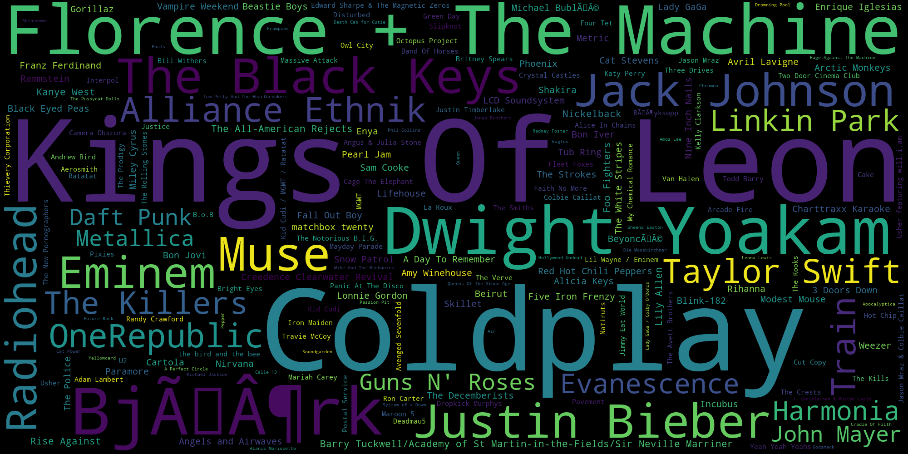
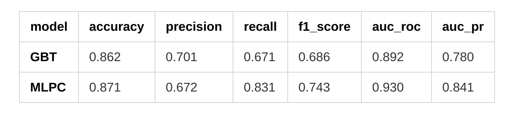
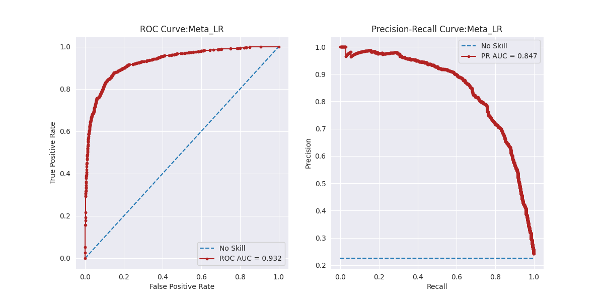
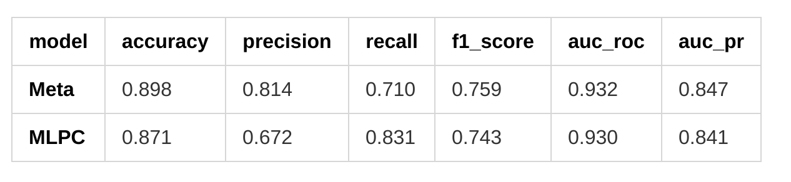

This is the second of a two parts story. Here, I lay out the steps for building a simple stacking model using PySpark to predict users' churn for a fictional music platform. The results are compared with the performance of the classifier discussed in the first part of the blog.
In User Activity Based Churn Prediction with PySpark on an AWS-EMR Cluster I describe in detail how to build a model to predict churn for a fictional online music platform named Sparkify.
The data I work with has about 26 millions records of user logs and size of 12 GB. This dataset is transformed into a features dataset that has one row for each of its 22728 users. There are 18 predicting features used in modeling. The predicted feature, called churn is based on the user's visit to the Cancellation Confirmation page on the platform, with 1 indicating that the user churned.
This features dataset is split into train and test set with a ratio of 7:3. Since the data is highly imbalanced towards the positive class, the split is done in such a way that the churn vs not-churn ratios are preserved in the two subsets (stratified split).
I spot check 6 classifiers using 5-fold cross validation and default parameters on the train set. All these classifiers are implemented in PySpark library MLlib. These are: Logistic Regression (LR), Decision Trees (DT), Random Forest (RF), Gradient Boosted Trees (GBT), Multilayer Perceptron Classifier (MLPC) and Linear Support Vector Machine (LSVC).
After comparing the relevant evaluators (in particular the F1-score and the PR-AUC score) I conclude that GBT and MLPC perform best on this dataset, and I continue with grid search to determine the optimal hyperparameter combinations for these models. The analysis of the evaluators on the test set indicates that the final best model is MLPC, a feedforward neural network with 4 layers and node distribution [18,8, 4, 2].
All this work is done in PySpark, with some help from Pandas, Matplotlib and Seaborn for visualizations, on an AWS-EMR cluster.
One of issues I ran into while working on this project was the time needed for the classifers to train, in particular GBT was extremely slow. Because of this reason, I reduced the number of combinations included in grid search to 4 models for GBT, and it still took 3 hours to train (with 5-fold cross validation). The 18 MLPC models were trained in about one hour. The data processing and the modeling described above takes a total of about 5 hours on the AWS-EMR cluster (configured as described in the previous blog).
As a challenge I decided to improve the above model by achieving better metrics values in a shorter training time, while still using only the classifiers from PySpark MLlib.
Stacking is an ensemble method (see A. Geron, Chpt. 7). It consists of several models that act as base predictors and a meta model that provides the final predictions.
The base models are chosen to be different algorithms which achieve a wide range of results. The meta model is usually logistic regression (for classification), but any other algorithm can be chosen, see this post by J. Brownlee for a great description of the stacking models.
The base models are fit on the train set and they make predictions on the validation set. The meta model is trained on the dataset of predictions of the base models, and it then predicts on the test set.
The methodology in this case is outlined as follows:
And here are the steps with code a few comments included.
4.1 Stratified split the data into three subsets
SPLIT_VALS = [.4, .4, .2]
def split_data (df):
"""
Split the dataset into training, validation set and test set.
Use a stratified sampling method.
INPUT:
df (PySpark dataframe) - dataframe
OUTPUT:
train_set, validation_set, test_set (PySpark dataframes) -
percentage split based on the provided values
"""
# split dataframes between 0s and 1s
zeros = df.filter(df["churn"]==0)
ones = df.filter(df["churn"]==1)
# split dataframes into training and testing
train0, validation0, test0 = zeros.randomSplit(SPLIT_VALS, seed=1234)
train1, validation1, test1 = ones.randomSplit(SPLIT_VALS, seed=1234)
# stack datasets back together
train_set = train0.union(train1)
validation_set = validation0.union(validation1)
test_set = test0.union(test1)
return train_set, validation_set, test_set
4.2 Instantiate the base classifiers
# the base classifiers
lr = LogisticRegression(featuresCol='features', labelCol='label',
predictionCol='pred_lr', probabilityCol='prob_lr',
rawPredictionCol='rawPred_lr')
rf = RandomForestClassifier(featuresCol='features', labelCol='label',
predictionCol='pred_rf', probabilityCol='prob_rf',
rawPredictionCol='rawPred_rf')
gbt = GBTClassifier(featuresCol='features', labelCol='label',
predictionCol='pred_gbt')
layers=[18,8,4,2]
mlpc= MultilayerPerceptronClassifier(featuresCol='features', labelCol='label',
predictionCol='pred_mlpc', probabilityCol='prob_mlpc',
rawPredictionCol='rawPred_mlpc', layers=layers)
lsvc = LinearSVC(featuresCol='features', labelCol='label',
predictionCol='pred_lsvc', rawPredictionCol='rawPred_lsvc')
models = [lr, rf, gbt, mlpc, lsvc]
Comments regarding the base classifiers:
4.3 Build a pipeline that transforms the data and creates the base models
def build_data_pipeline():
"""
Combines all the stages of the data processing and base modeling.
"""
# stages in the pipeline
stages = []
# encode the labels
label_indexer = StringIndexer(inputCol=CHURN_LABEL, outputCol="label")
stages += [label_indexer]
# combine the binary features in a vector
bin_assembler = VectorAssembler(inputCols=CAT_FEATURES, outputCol="bin_features")
stages += [bin_assembler]
# combine the continuous features in a single vector
cont_assembler = VectorAssembler(inputCols = CONT_FEATURES, outputCol="cont_features")
stages += [cont_assembler]
# standardize the continuous features
cont_scaler = StandardScaler(inputCol="cont_features", outputCol="cont_scaler",
withStd=True , withMean=True)
stages += [cont_scaler]
# combine all the features into a single column vector
all_assembler = VectorAssembler(inputCols=["bin_features", "cont_scaler"],
outputCol="features")
stages += [all_assembler]
# add the base classifiers to the pipeline
stages += models
# create the pipeline
pipeline = Pipeline(stages=stages)
return pipeline
4.4 Fit the base classifiers on the train set and make predictions on the validation set
# instantiate the data pipeline to process and model data
base_pipeline = build_data_pipeline()
# fit the pipeline on the train set
base_pipeline_model = base_pipeline.fit(train_set)
# make predictions on the validation set
base_pred = base_pipeline_model.transform(validation_set)
4.5 Create a meta features dataset
The base_pred is a dataframe that contains the predictive features, the labels as well as the columns created in the processing stage, and also the predictions and probabilities columns given by the base classifiers:
root
|-- ...
|-- label: double (nullable = false)
|-- bin_features: vector (nullable = true)
|-- cont_features: vector (nullable = true)
|-- cont_scaler: vector (nullable = true)
|-- features: vector (nullable = true)
|-- rawPred_lr: vector (nullable = true)
|-- prob_lr: vector (nullable = true)
|-- pred_lr: double (nullable = false)
|-- rawPred_rf: vector (nullable = true)
|-- prob_rf: vector (nullable = true)
|-- pred_rf: double (nullable = false)
|-- rawPrediction: vector (nullable = true)
|-- probability: vector (nullable = true)
|-- pred_gbt: double (nullable = false)
|-- rawPred_mlpc: vector (nullable = true)
|-- prob_mlpc: vector (nullable = true)
|-- pred_mlpc: double (nullable = false)
|-- rawPred_lsvc: vector (nullable = true)
|-- pred_lsvc: double (nullable = false)
Create a dataframe that contains the individual predictions and the individual probabilities of the base classifiers, and also the label column:
# create the meta features dataset
meta_cols = ("pred_lr", "prob_lr", "pred_rf", "prob_rf", "pred_gbt",
"pred_mlpc","prob_mlpc", "pred_lsvc", "label")
meta_features_df = base_pred.select(*meta_cols)
4.6 Train and fine tune a Logistic Regression meta model
In order to complete this step we need to create a pipeline for the task, the build_meta_pipeline function is in essence the build_data_pipeline used for the base model, with adjustments to the sets of features and with the last stage replaced by the meta classifier.
# instantiate the meta classifier
meta_classifier = LogisticRegression(featuresCol=meta_featuresCol,
labelCol=meta_labelCol,
predictionCol=meta_predCol)
# build the specific pipeline
meta_pipeline = build_meta_pipeline(meta_classifier)
# create the parameters list
meta_param = ParamGridBuilder() \
.addGrid(meta_classifier.regParam, [0.0, 0.01, 0.1]) \
.addGrid(meta_classifier.elasticNetParam, [0.0, 0.01, 0.1]) \
.addGrid(meta_classifier.maxIter, [50, 100, 200]) \
.build()
# build the grid search model
meta_lr = grid_search_model(meta_pipeline, meta_param)
# train the model
meta_model = meta_lr.fit(meta_features_df)
4.7 Make predictions on the test set
# base classifiers make predictions on the test set
<p class="mume-header " id="base-classifiers-make-predictions-on-the-test-set"></p>
test_pred = base_pipeline_model.transform(test_ser)
# create the meta features test dataset
<p class="mume-header " id="create-the-meta-features-test-dataset"></p>
meta_test_df = test_pred.select(meta_cols)
# meta classifier predictions on the meta features test set
<p class="mume-header " id="meta-classifier-predictions-on-the-meta-features-test-set"></p>
meta_test_pred = meta_model.transform(meta_test_df)
This whole process takes about minutes on the AWS-EMR cluster (see the first blog for configuration details), including the hyperparameter combinations grid search for tuning the meta classifier. It seems that we reduced the training time quite a bit if we compare with the hours needed to train and tune the models from the first part of the blog. However we have to keep in mind that we work with about half of data at a time now(the train set is only of the data instead of from the first run).
The choice of the meta classifier (logistic regression) also contributed to the training time reduction, being less complex than GBT or MLPC and therefore faster to train.
The ROC and PR curves have good shapes, close to the standard desired behavior.
Finally, let's compare the metrics for the two models: the meta classifier built above and the multi layer perceptron developed in the first part of the blog:
We observe that, except for recall, the stacking ensemble outperforms the multilayer perceptron. The improvement is more noticeable in the F1-score (and in particular in the precision scores), while the ROC_AUC and PR_AUC scores are just slightly higher.
We see that using a simple minded stacking ensemble we can at least recover the results of a sophisticated classifier fine tuned with grid search and cross validation, but in a fraction of time.
The performance of the stacking ensemble is influenced by the fact that we have less data available for training. I evaluated the model with a 4:3:3 split of the data and the values of the metrics were noticeably smaller.
The simple stacking model can be improved by: using cross validation to train the base predictors (see this Kaggle thread for various ways to do this) or by increasing the pool of base predictors.
In the end, the simple stacking model improved slightly the performance metrics and significantly reduced the training time.
The full code for both parts of the project can be found on this Github repository.